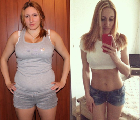

Ξεφορτωθείτε τα κόμπλεξ σε μερικές εβδομάδες
Η δημοσιογράφος μας Άννα Γεωργίου, στο πλαίσιο του ρεπορτάζ της «Κάναμε την αλλαγή», πήρε συνέντευξη από την Όλγα, η οποία είπε την υπέροχη ιστορία της.
Γειά σας. Πείτε μας την ιστορία σας για το πως αδυνατίσατε
Καλή σας μέρα. Με λένε Όλγα. Είμαι 34 ετών και τα τελευταία δέκα χρόνια προπονούμε σκληρά για να χάσω το περιττό βάρος Τώρα ζυγίζω 57 κιλά, πριν από την θεραπεία ζύγισα 95 κιλά με ύψος 165 εκατοστών.
Πως πήρατε αυτά τα κιλά?
Ήμουν πάντα παχουλή, στην αρχή έκανα δίαιτα, συχνά προπονιόμουν στο γυμναστήριο. Με βοήθησε, αλλά όχι για πολύ. Τα πρώτα προβλήματα, ξεκίνησαν με το στρες που δεν μπορούσα να το αποφύγω. Μετά το πανεπιστήμιο, πήγα για δουλειά και έτρωγα πολύ τα βράδια. Μερικές φορές το βραδινό μου ήταν στις 8-10 μ.μ., έτρωγα και πιο αργά. Μου αρέσουν ιδιαίτερα τα γλυκά, οι τηγανητές πατάτες και το fast food. Όταν παντρεύτηκα, ζύγιζα ήδη περίπου 78 κιλά.
Η γέννηση του παιδιού ήταν η ώθηση για την αύξηση του βάρους μου, καθώς καθόμουν στην άδεια μητρότητας, περπατούσα πολύ λίγο και έτρωγα πολύ. Το βάρος δεν το πήρα αμέσως αλλά με την πάροδο των χρόνων, απλά δεν ασχολιόμουν με το πρόβλημά μου, αγοράζοντας ρούχα ένα μέγεθος μεγαλύτερο κάθε φορά. Έτσι έφτασα σχεδόν εκατό κιλά. Εμφανίστηκαν προβλήματα στην προσωπική μου ζωή. Ο σύζυγός μου και εγώ βρισκόμασταν σχεδόν στα πρόθυρα διαζυγίου και συνειδητοποιήσαμε ότι έπρεπε να αλλάξω κάτι στον εαυτό μου.
Ναι, φυσικά και είχα. Η δύσπνοια έχει γίνει ένα συνεχές πρόβλημα για μένα. Περπατούσα κυριολεκτικά 200 μέτρα και με έπιανε ασφυξία. Επιπλέον είχα ταχυκαρδία και ορμονική ανισορροπία. Αυξήθηκε επίσης το πρόβλημα με τις αρθρώσεις στο γόνατο, διότι δεν μπορούσα να αντέξω μεγάλη πίεση. Τα πόδια μου πονούσαν ήταν πρησμένα και δυσκολευόμουν στο περπάτημα. Πήγα στον γιατρό και μετά την εξέταση μου με συμβούλευσε να χάσω επειγόντως κιλά, όμως οι ενέσεις, η φυσιοθεραπεία και τα φάρμακα σταματούν το πρόβλημα μόνο για λίγο, αλλά δεν το επιλύουν.
Τα προβλήματα υγείας και η θλίψη βλέποντάς με στον καθρέφτη έγιναν παράγοντες που επηρέασε την απόφασή μου. να χάσω βάρος. Δεν έκανα απλά μόνο δίαιτα για μερικές μέρες έτρεχα μία φορά την εβδομάδα, αλλά στην πραγματικότητα έκανα μια αποτελεσματική θεραπεία απώλειας βάρους.
Πως ανακαλύψατε το συμπληρωμα Fortunella?Ανακάλυψα για τον εαυτό μου το συμπληρωμα Fortunella μετά από αποτυχημένες προσπάθειες να χάσω βάρος. Δοκίμασα τόσο ακριβά όσο και φθηνά φάρμακα. Καθώς επίσης δεν έτρωγα τίποτα για δύο - τρεις φορές το μήνα για 4-5 ημέρες, φυσικά και έχανα βάρος, αλλά λίγο και όχι για πολύ, επιπλέον, τα νύχια άρχισαν να σπάνε, τα δόντια μου χάλαγαν και τα μαλλιά μου άρχιζαν να πέφτουν. Δοκίμασα πολλές δίαιτες, αλλά τίποτα δεν με βοήθησε. Πήρα ακόμη περισσότερο βάρος.
Μόλις συνάντησα μια παλιά μου γνωστή και με εξέπληξε η ομορφιά της, αν και, ήταν όπως και εγώ, πάντα υπέφερε από το υπερβολικό βάρος. Ρώτησα τι την βοήθησε και μου είπε για αυτό το συμπληρωμα. Φυσικά, αποφάσισα να δοκιμάσω, χωρίς να ελπίζω ιδιαίτερα για ένα καλό αποτέλεσμα. Έπινα το Fortunella για σχεδόν 4 μήνες και έχασα συνολικά πάνω από 25 κιλά. Είχα χάσει και περισσότερα. Το αποτέλεσμα μου είναι 55-60 κιλά, και είμαι σίγουρη ότι θα το πετύχω. Αλλά τώρα αισθάνομαι μια τεράστια διαφορά μεταξύ του πριν και του τώρα.
Πώς πίνατε το συμπληρωμα, πώς κάνατε διατροφή και πως αθλούσασταν?Εγώ χρησιμοποίησα το συμπληρωμα Fortunella αυστηρά σύμφωνα με τις οδηγίες χωρίς να πειραματιστώ με τις δοσολογίες. Φυσικά, αρνήθηκα το γρήγορο φαγητό. Συνιστώ να μην χρησιμοποιείτε ζαχαρούχα αναψυκτικά, αλεύρι, γλυκά, τηγανητά, καπνιστά λουκάνικα και ψάρια. Έτρώγα βραστό κρέας και ψάρια με χαμηλά λιπαρά, περιελάμβανα περισσότερες φυτικές ίνες στη διατροφή μου (λαχανικά, χόρτα), φρούτα. Αυτό που προκαλεί έκπληξη είναι ότι μόλις λίγες μέρες μετά τη λήψη των ταμπλέτων Fortunella, δεν με τραβούσαν τα γλυκά, αν και πριν θα μπορούσα ασυναίσθητα να φάω ένα κουλούρι ή μια σοκολάτα και να δω την αγαπημένη μου ταινία.
Αν μιλάμε για τα αθλήματα, τότε το τρέξιμο με τα άρρωστα γόνατά μου απαγορεύεται και απλά καθε πρωι έβγαινα βόλτα μόνο με το σκύλο μου. Αυτό ήταν αρκετό για να διατηρήσω την σιλουέτα μου σε καλή κατάσταση.
Ναι, είμαι πολύ χαρούμενη. Πρώτα απ 'όλα, είμαι ικανοποιημένη με το αποτέλεσμα που έχω, για την απουσία των δυσάρεστων παρενεργειών και τη προσιτή τιμή του συμπληρωματος Fortunella. Μπορώ ως άτομο να δώσω σκληρή μάχη με το περιττό βάρος και προτείνω αυτές τις ταμπλέτες αν θέλετε να είστε αδύνατοι, όμορφοι και ευτυχισμένοι. Επαναλαμβάνω, ότι είναι μοναδικο συμπληρωμα που πραγματικά κάνει δουλειά, οπότε σίγουρα δεν θα σπαταλήσετε τα χρήματά σας.

Δημοσιογράφος Άννα Γεωργίου


ΚΡΙΤΙΚΕΣ
Το συμπληρωμα Fortunella είναι ένα καινούργιο προιόν σε προσιτή τιμή. Έχασα 10 κιλά σε δύο μήνες, ενώ περιορίστηκα μόνο σε κάποια επιβλαβή προϊόντα, όπως το αλεύρι, τα γλυκά, η μαγιονέζα. Το αίσθημα της πείνας καταστέλλεται, και δεν ζαλίζεται το κεφάλι, η διάθεση είναι εξαιρετική, τόσο ανάλαφρη... Αδυνάτιζα εύκολα και χωρίς πολλές προσπάθειες.
ΑπαντήστεΕμένα δεν με βοήθησε, κάτι πήγε στραβά. Έπινα μια εβδομάδα και στη ζυγαριά δεν είδα φανταστικό αποτέλεσμα, όλα μάταια ....
ΑπαντήστεΓεια σας, σας ευχαριστώ για το μήνυμά σας. Το Fortunella είναι κλινικά δοκιμασμένο και η αποτελεσματικότητά του έχει αποδειχθεί. Κάθε οργανισμός είναι ατομικός και η διαδικασία απώλειας βάρους εξαρτάται από τους μεταβολικούς παράγοντες. Παίρνοντας το συμπλήρωμα διατροφής πρέπει να κάνετε ολοκληρωμένη θεραπεία και να μην διακόπτεται η πρόσληψή του μετά από 7 ημέρες. Θα πρέπει επίσης να ελέγχετε την ποσότητα της διατροφή σας. Εάν συνεχίσετε να καταναλώνετε μεγάλες ποσότητες τροφίμων, είναι φυσικό το αποτέλεσμα να είναι λιγότερα αισθητό. Φροντίστε να μετράτε τις θερμίδες και να απομακρύνετε το γρήγορο φαγητό από τη διατροφή σας.
ΑπαντήστεΞέρετε, η αλήθεια είναι ότι συνέχισα να τρώω πολύ, αν και δεν το παρατήρησα αμέσως. Έλεγχα τακτικά τη διατροφή μου και πραγματικά με βοήθησε, άρχισα μα χάνω βάρος γρηγορότερα. Σας ευχαριστώ!
ΑπαντήστεΘέλω να το παραγγείλω Fortunella, μα φοβάμαι. Υπάρχουν επιβλαβή συστατικά? Ποια είναι συστατικά του?
ΑπαντήστεΓεια σας, σας ευχαριστώ για την ερώτησή σας. Το συμπλήρωμα περιέχει μόνο χρήσιμα και αποτελεσματικά συστατικά που βοηθούν στον έλεγχο του βάρους, συμβάλλουν στη διαδικασία καύσης, αναγέννησης και ανανέωσης κυττάρων. Πρώτα απ 'όλα, είναι το Forskolin ή το labdanic diterpenoid, το οποίο εγγυάται την ταχεία καύση σωματικού λίπους και πικολινικού χρωμίου, το οποίο είναι ένα σημαντικό μεταλλικό συστατικό που ρυθμίζει τη μεταβολική ισορροπία. Το εκχύλισμα καυτερού πιπεριού Cayenne, το εκχύλισμα wasabi και η L-καρνιτίνη έχουν φυτοκτόνο, καύση λίπους, αποκαταστατικές ιδιότητες για το ανθρώπινο σώμα
ΑπαντήστεΚορίτσια σας το συνιστώ! Fortunella! Απλά σούπερ, και δεν μετανιώνω που το απέκτησα. Είδα μια πορεία τριών μηνών και έχασα πάνω από 15 κιλά. Η σιλουέτα μου έγινε πιο αδύνατη και πιο σμιλεγμένη, δεν χαλαρώνη το δέρμα. Το βάρος πραγματικά εξαφανίζεται μπροστά στα μάτια μου. Σιγουρεύτηκα για το αποτέλεσμα και άλλαξα εντελώς την ντουλάπα μου. Το μόνο πράγμα είναι η διατροφή. Εάν ακολουθήσετε τους κανόνες του PP, τότε η διαδικασία θα προχωρήσει ακόμη πιο γρήγορα. Τις δύο πρώτες εβδομάδες, άλλαξε εντελώς τις διατροφικές συνήθειες, αν και στο παρελθόν αγαπούσα τα πατατάκια, τις σόδες, τις πίτσες. Έπινα περισσότερο από 2 λίτρα νερό την ημέρα, έτρωγα λαχανικά, φρέσκα φρούτα, μούσλι το πρωί και δημητριακά. Ζυγιζόμουν 67 κιλά με ύψος 1,59 και τώρα ζυγίζει 50 κιλά.
Απαντήστε
Με βοήθησε λίγο, αλλά έπινα κατά διαστήματα και όχι κάθε μέρα, με αποτέλεσμα, να χάσω 4 κιλά σε ένα μήνα, νομίζω ότι είναι δεν είναι και τόσο μεγάλη ντροπή. Μπορούσα και χωρίς το Fortunella να χάσω τόσα πολλά κιλά και ακόμη περισσότερο με την δίαιτα του Dukan για παράδειγμα.
ΑπαντήστεΧαίρετε. Σας ευχαριστούμε για το μήνυμά σας. Η θεραπεία Fortunella πρέπει να πίνετε συνεχώς έως ότου επιτευχθεί το επιθυμητό αποτέλεσμα. Οι δίαιτες δίνουν ένα βραχυπρόθεσμο αποτέλεσμα, μετά από το οποίο είναι δυνατή ακόμη μεγαλύτερη αύξηση του σωματικού βάρους. Με το συμπλήρωμα διατροφής μας, μπορείτε να ελέγξετε το βάρος σας αναπτύσσοντας τις σωστές διατροφικές συνήθειες.
ΑπαντήστεΕίναι ένα καλό συμπληρωμα, και μαζί με το PP και με μια μέτρια φυσική δραστηριότητα, κάνει απλά θαύματα. Ένα δροσερό συναίσθημα όταν χάνετε βάρος χωρίς υπερβολικό άγχος. Έχασα 10 κιλά που τα είχα πάρει μετά τον τοκετό. Το δέρμα σφίγγτηκε, η μέση έγινε πιο αδύνατη, έσφιξαν οι γλουτοί και αδυνάτισαν τα πόδια.
ΑπαντήστεΕμένα δεν μου ταιριάζει, αφού το πήρα ένιωσα δυσφορία στο στομάχι μου, ελαφριά ναυτία.
ΑπαντήστεΓεια σας, σας ευχαριστώ για το μήνυμά σας. Η θεραπευτική σύνθεση του συμπληρώματος διατροφής μας επιλέγεται με τέτοιο τρόπο ώστε να μην μπορεί να προκαλέσει δυσφορία από το γαστρεντερικό σωλήνα, επομένως το πρόβλημά σας είναι πιθανότατα δυσλειτουργία του γαστρεντερικού σωλήνα (παρουσία γαστρίτιδας, νόσου του πεπτικού έλκους) ή ακατάλληλης μη ισορροπημένης διατροφής.
ΑπαντήστεΤο σκέφτηκα και παρόλα αυτά πήγα στον γαστρεντερολόγο. Έκανα τις απαραίτητες εξετάσεις και ανακάλυψα ότι είχα γαστρίτιδα σε οξεία μορφή. Σας ευχαριστώ, σίγουρα θα προσπαθήσω να κάνω τη θεραπεία αδυνατίσματος με την βοήθεια του συμπληρωματος σας.
Απαντήστε